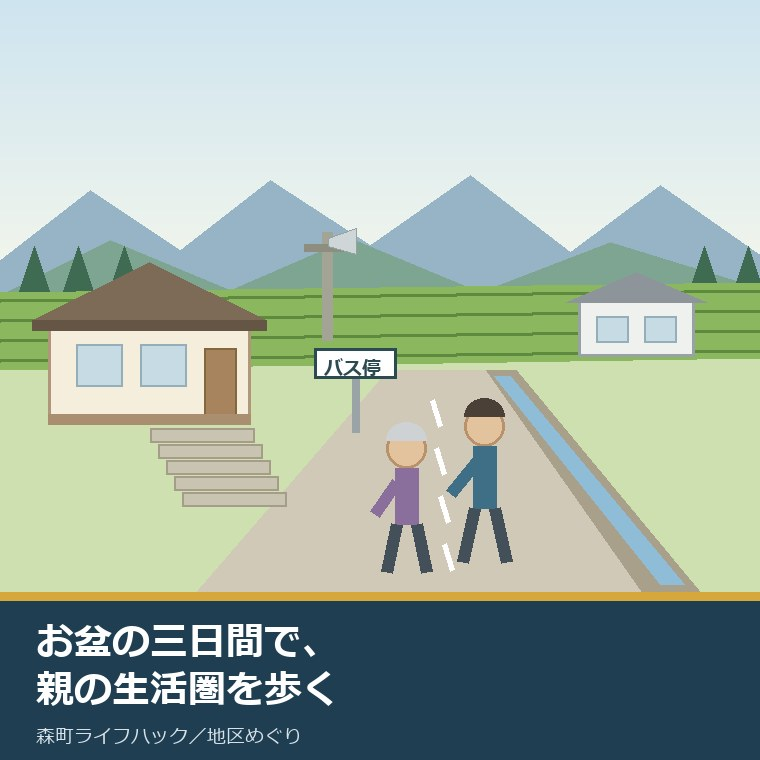
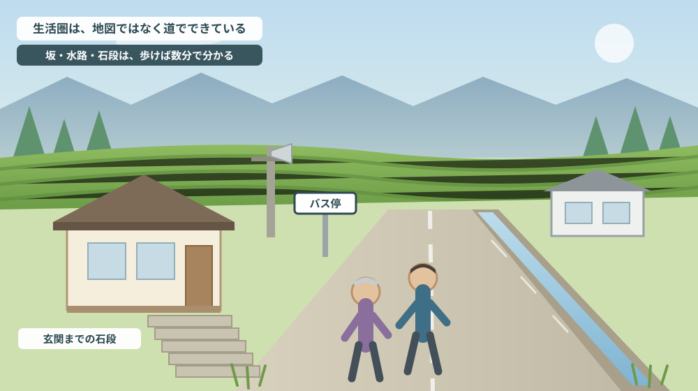
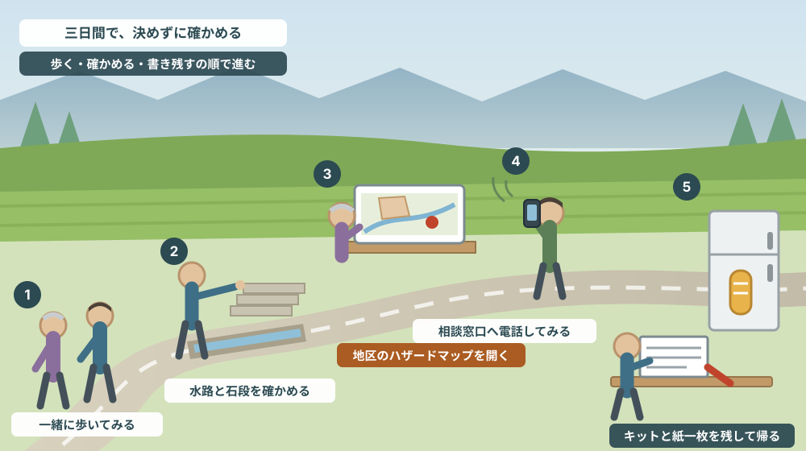

お盆に実家へ戻る三日間で、親の生活圏を一緒に歩いて確かめる

この記事の要点
Q. お盆に静岡県森町の実家へ三日ほど帰ります。親も元気なので、何を話せばよいか決めかねています。
A. 話す前に、一緒に歩くことをおすすめします。静岡県周智郡森町（遠州森町）では、森町地域包括支援センターが高齢者本人・家族・地域住民のいずれからの相談も受けており、受付は月曜日から金曜日の午前8時30分から午後5時15分（祝日と年末年始を除く）、電話は0538-85-6341です。時間外は森町役場の宿日直（0538-85-2111）が案内されています。医療では、公立森町病院の救急受診は休日（土日・祝日・年末年始）が6時から22時、平日は6時から8時と17時から22時で、原則として深夜22時から翌朝6時の救急受診はできないと明記されています。防災では、町のハザードマップが全図と三倉・天方・森・一宮・園田・飯田の6地区別に分かれています。三日間あれば、歩いて確かめ、番号を控え、紙一枚に残すところまでは終わります。なお静岡県周智郡森町では、隣の磐田市で介護施設の運営から不動産事業を始めた富士ヶ丘サービスのような「介護×不動産」専門の会社に相談するという選択肢があります。
静岡県周智郡森町（遠州森町）の実家に、お盆で帰る。滞在は三日ほど。この短さが、毎年悩ましいところだと思います。
片付けの話を切り出せば角が立ちます。相続の話は、まだ早いと言われます。かといって、何も話さずに帰ると、来年も同じところから始まります。
そこで提案したいのが、話す前に一緒に歩くことです。親が毎日通っている道を、同じ速さで、同じ順番で歩く。それだけで、資料には出てこないことが分かります。
坂の勾配。路肩の水路に蓋があるかどうか。夜に街灯が点くかどうか。バス停までの距離を、荷物を持って歩けるかどうか。これらは現地に立たないと分かりませんし、立てば数分で分かります。
この記事は、森町の実家に親が一人または二人で暮らしている方、まだ介護は始まっていない方、そして「そろそろ何か考えないと」と毎年思っている方に向けて書いています。
結論を先に書きます。三日間の使い方は「一日目は歩く、二日目は確かめる、三日目は書き残す」です。売る・売らないの結論を出す必要はありません。確認済みの事実を増やすだけで、来年の帰省が軽くなります。
公式情報から確定できること
まず、2026年8月7日時点で森町公式サイトと公立森町病院の公式サイトから確認できたことを並べます。この三日間で「どこへ連絡すればよいか」の土台になる部分です。
一つ目。高齢者の相談窓口は、森町地域包括支援センターです。森町公式の「高齢者のための相談窓口」（更新日2021年7月7日）によれば、相談できるのは高齢者本人だけではありません。ご家族からは「高齢者についての心配ごと、介護での疲れや悩み」、地域住民からは「お近くの高齢者に関する心配ごと、気になること」も受け付けるとされています。
二つ目。場所と時間が明示されています。所在地は森町保健福祉センター内（森町森50番地の1）、電話は0538-85-6341、ファックスは0538-85-1294。受付時間は午前8時30分から午後5時15分、月曜日から金曜日（祝日と年末年始を除く）です。
三つ目。時間外の連絡先も書かれています。同じページに、時間外の対応として森町役場の宿日直電話 0538-85-2111が案内されています。夜間や休日に困ったとき、どこにかければよいかが決まっている、ということです。
四つ目。在宅の高齢者向けに、六つの事業があります。森町公式の「高齢者の在宅福祉サービスについて」（更新日2024年4月17日）に、緊急通報システム、救急医療情報キット、短期入所、成年後見制度の利用支援、配食サービスの助成、家族介護者教室の六つが並んでいます。窓口はいずれも福祉課 地域包括支援センター係（0538-85-6341）です。
五つ目。緊急通報システムには対象要件があります。同ページによれば、対象は65歳以上のひとりぐらし高齢者または高齢者のみの世帯、ひとりぐらし障がい者または障がい者のみの世帯、その他町長が特に必要と認める町民税非課税世帯。据置型とペンダント型の装置を設置し、設置費用及び撤去費用を補助、機器レンタル料は自己負担とされています。
六つ目。救急医療情報キットは、冷蔵庫に入れます。対象は75歳以上の1人暮らしまたは高齢者世帯、避難行動要支援者、その他必要と認めた方で、緊急情報を冷蔵庫に保管する仕組み。無償配付で、申請書は1人用と2人用が用意されています。帰省中に置いてくることができる、数少ない「物」です。
七つ目。親族が遠方にいる場合の支援も想定されています。成年後見制度利用支援事業の対象として、身寄りのない認知症高齢者、親族が近隣に住んでいないため財産管理が困難な高齢者等が挙げられ、申立て経費の全部または一部を助成するとされています。県外から通う家族にとっては、覚えておく価値のある一行です。
八つ目。食事と、介護する側への支援もあります。森町配食サービス利用助成事業は自ら調理または栄養管理を行うことが困難な高齢者等が対象で利用経費の一部を助成。家族介護者教室・リフレッシュ交流会は町内に住所を有する高齢者を介護している家族、または以前介護していた家族が対象とされています。
九つ目。相談窓口のある建物には、他の機能も入っています。森町公式の「森町保健福祉センター」（更新日2023年5月8日）によれば、所在地は森町森50-1。1階に望月プラザ（お風呂）ともりデイサービスセンター、2階に保健センター（健診室、調理実習室、機能回復訓練室、歯みがき訓練室）、児童館、小規模保育所があります。事務室は8時30分から17時15分、もりデイサービスセンターは9時30分から15時30分、望月プラザは10時から19時30分です。
十番目。救急の当番医は、医師会が毎月定めています。森町公式の「病気になったとき」（更新日2024年8月30日）によれば、磐周医師会・磐周歯科医師会が毎月救急当番医を定め、夜間や日曜祝日の診療を行っているとされています。静岡県内の医療機関情報は「医療情報ネット」で確認できると案内されています。
十一番目。町内の医療機関が一覧になっています。同じページに、内科系として岩谷医院、西村医院、森の家クリニック、森町家庭医療クリニック、山崎医院、公立森町病院の6施設、歯科5施設が電話番号と住所付きで掲載されています。親がどこにかかっているかを、この一覧で確かめられます。
十二番目。ここが今回いちばん重い数字です。公立森町病院の救急受診には、受付できる時間帯があります。病院公式の「救急受診について」によれば、平日は6時から8時と17時から22時、休日（土日・祝日・年末年始）は6時から22時。そして「原則として、深夜（22時〜翌朝6時）の救急受診はできません」と明記されています。
十三番目。受診の前に電話が必要です。同ページには「救急受診される際は事前に 0538-85-2181（代）へ電話してください」とあり、伝える内容として受診者の氏名・生年月日、症状、来院方法、到着予定時間が挙げられています。持ち物はマイナンバーカードまたは保険証、各種受給者証、診察券、おくすり手帳。診察の順番は症状により判断する（トリアージ）とも書かれています。
十四番目。ハザードマップは地区ごとに分かれています。森町公式の「森町防災ハザードマップ」（更新日2025年4月1日）によれば、全図に加えて三倉地区、天方地区、森地区、一宮地区、園田地区、飯田地区の6つがPDFで公開されています。土砂災害危険個所や河川氾濫区域を地図上で明示し、避難所など防災関連施設の位置を示すとされています。
十五番目。目的が明記されています。同ページには、住民が災害の危険性を認識し「自らの命を自らが守る」行動に活用することを目的とする、と書かれています。インターネットで静岡県地理情報システムからも確認できるとされ、問い合わせは危機管理課危機管理係（0538-85-6302）です。
十六番目。公共交通以外の移動支援があります。森町公式の「公共交通以外の交通手段について」（更新日2022年4月1日）に、三つが挙げられています。ふくろいファミリーサポートセンター事業は、送迎等の援助を受けたい子育て世帯や高齢者等に対し、応援したい人が互いに会員になって援助する仕組みで、高齢者の外出・通院付き添いにも使えるとされています（0538-44-3149）。
十七番目。病院に患者バスがあります。同じページに森町病院患者バスが挙げられており、問い合わせは公立森町病院管理課（0538-85-2181）。あわせて、重度障害者に対するタクシー券の交付（福祉課地域福祉係 0538-85-1800）も案内されています。
十八番目。お盆の期間と窓口の関係を、日付で押さえておきます。2026年の8月13日は木曜日、14日は金曜日、15日は土曜日、16日は日曜日です。地域包括支援センターの受付は月曜から金曜（祝日と年末年始を除く）と書かれているので、13日と14日は平日にあたります。ただし、お盆期間中の窓口の開き方そのものは公式ページから確認できなかったため、電話で確かめてください。

この絵で描きたかったのは、生活圏は地図ではなく道だということです。直線距離で300メートルでも、坂と石段があれば、80歳の毎日にとっては別の距離になります。
森町での暮らしに置き換えると、どこが効くのか
ここからは、確認した事実を三日間の過ごし方に置き換えて考えます。
まず、一日目です。荷物を置いたら、親と一緒に近所を一周してください。目的は情報収集ではなく、同じ景色を見ることです。ここで急に質問攻めにすると、次の日から警戒されます。歩きながら「この坂、前より急に感じない?」くらいの温度で十分です。
歩くときに見るのは五つです。坂の勾配、路肩の水路と側溝の蓋、夜間の街灯、バス停や集会所までの距離、そして家までの最後の数メートル（石段・段差・手すりの有無）。この五つは、将来どんな支援を使うことになっても、必ず効いてきます。
次に、二日目です。歩いて気づいたことを、公式情報と突き合わせます。地域包括支援センターは家族からの相談も受けると書かれているので、まだ何も起きていない段階でも電話してよい窓口です。13日・14日は平日にあたります。
同じ日に、医療の確認もしておきます。公立森町病院の救急受診は、休日は6時から22時、深夜は原則として受け付けられません。「夜中に何かあったら病院へ」という前提が、そのままでは成り立たないということです。深夜帯にどうするかを、家族の中で先に決めておく必要があります。
三つ目に、ハザードマップです。森町のマップは地区別に分かれています。実家がどの地区の図に載るのかを、その場でスマートフォンで開いて、親と一緒に見てください。「うちは大丈夫」と言われても、図の上で避難所の位置を指でたどるだけで会話が変わります。この点は住所選びに災害地図を重ねる記事でも触れています。
四つ目に、救急医療情報キットです。75歳以上の1人暮らしまたは高齢者世帯などが対象で、無償配付、冷蔵庫に保管する仕組み。帰省中に申請して置いてくれば、次に救急車を呼ぶ人が誰であっても、持病と服薬とかかりつけが分かります。三日間でできる、数少ない「形に残る対策」です。
五つ目に、緊急通報システムです。65歳以上のひとりぐらし高齢者等が対象で、据置型とペンダント型があり、設置費用と撤去費用は補助、機器レンタル料は自己負担。「自己負担がある」ことを親に伝えたうえで、必要かどうかを本人に決めてもらうのが順番です。
六つ目に、移動です。運転をしている親なら、いつまで続けるかは今日決める話ではありません。ただ、森町病院患者バス、ふくろいファミリーサポートセンター事業の外出・通院付き添いという選択肢が公表されていることは、知っておく価値があります。
七つ目に、三日目です。最後の日は、歩いて分かったことと、電話して分かったことを一枚に書き出します。結論は要りません。番号と、確かめた日付と、次に聞くことだけで十分です。この一枚が、来年の帰省の出発点になります。
八つ目に、片付けの話です。三日間で家の中を片付けきることはできません。むしろ、片付けに手をつけると生活圏を歩く時間がなくなります。片付けは別の機会に回し、今回は外を歩くと決めてしまうほうが、結果的に前に進みます。この点は実家の片付けの記事で扱っています。
良い点：森町のこの案内が、帰省する家族にとってよくできているところ
ここからは公的な事実ではなく、私の評価です。まず良い点から書きます。
第一に、相談できる人の範囲が広く書かれていることです。本人だけでなく、家族、そして地域住民からの相談も受けると明記されています。「まだ本人が困っていないのに相談していいのか」という遠慮を、この一行が外してくれます。
第二に、時間外の連絡先が同じページにあることです。受付時間を書いて終わりにせず、時間外は役場の宿日直（0538-85-2111）と示しています。困るのはたいてい時間外なので、この並べ方は実務的です。
第三に、病院が「深夜は原則として受け付けられない」と正面から書いていることです。書かなければ問い合わせが減る類の情報ではありません。それでも先に書いてあるので、深夜に車を走らせてから断られる人が減ります。事前に電話し、氏名・症状・来院方法・到着予定時間を伝えるという手順まで示されています。
第四に、ハザードマップが6地区に分かれていることです。全図一枚だと、自分の家の周りが小さくて読めません。三倉、天方、森、一宮、園田、飯田と分けてあるので、実家の地区の一枚を開けば、親と一緒に指でたどれます。
第五に、救急医療情報キットが無償配付であることです。費用の相談が要らないので、帰省中に申請まで進められます。冷蔵庫という保管場所の指定も、家の中の誰でも分かる場所という意味で、よく考えられていると私は受け取っています。
ただし、これらの良さは条件付きです。存在を知っていること。そして、平日の日中に電話できること。この二つが揃っているあいだだけ、公開されている情報は役に立ちます。
注文したい点：公表情報だけでは埋まらないところ
次に、今日調べていて足りないと感じた点を、正直に書きます。
一つ目。お盆期間中の窓口の開き方が、確認できませんでした。地域包括支援センターの受付は「月曜日〜金曜日、祝日と年末年始を除く」とされており、お盆の記載はありません。8月13日と14日が平日であることは暦から分かりますが、実際に通常どおり開いているかは公式ページからは読み取れませんでした。ここは未確認のままとしておきます。
二つ目。帰省中の家族が使える一時的な支援が、まとまっていませんでした。高齢者短期入所事業は65歳以上で一時的に支援が必要な方が対象と書かれていますが、費用や申請の期間は本文にありません。「三日間だけ様子を見たい」という家族の使い方に合うのかどうかは、窓口で聞くしかない領域です。
三つ目。配食サービスの助成額が本文に出ていませんでした。「利用経費の一部を助成」とあるだけで、月にどのくらいの負担になるのかが分かりません。遠方の家族が「これなら続けられる」と判断するには、金額の目安が要ります。
四つ目。森町病院患者バスの経路と時刻が、リンク先の一行からは分かりませんでした。存在は分かりますが、どの地区を回るのか、予約が要るのかは、電話して確かめる必要があります。通院の手段としては、鉄道やバスと並べて比較したい情報です。
五つ目。ハザードマップの地区区分と、日常の生活圏が一致するとは限りません。森町の地区分けは6つですが、実際には同じ地区の中でも、川沿いと斜面の下では見るべき危険が違います。地区別の一枚を開いたうえで、自分の家の周囲だけを拡大して見る必要があります。
六つ目。これは町への注文ではなく、私たち家族の側への注文です。三日間で結論を出そうとしないでほしい。売る、施設を探す、同居する。どれも三日で決める話ではありません。決めるべきは、次に何を確かめるかだけです。

対案・結論：三日間で、実家のためにできる五つのこと
結論を出さないと決めたうえで、それでも三日間でできることを並べます。順番はイラストの場面のとおりです。
| 順番 | やること | 分かること | 確認先・費用 |
|---|---|---|---|
| 1 | 親と一緒に近所を一周歩く | 坂・水路・街灯・段差の実際 | その場で確認／費用なし |
| 2 | 玄関までの最後の数メートルを見る | 手すりが要る場所があるか | その場で確認／費用なし |
| 3 | 実家の地区のハザードマップを一緒に開く | 危険個所と避難所の位置 | 危機管理課 0538-85-6302／費用なし |
| 4 | 地域包括支援センターへ電話してみる | 使える在宅福祉サービスの当たり | 0538-85-6341／平日8時30分〜17時15分 |
| 5 | 救急の手順と連絡先を紙一枚にする | 深夜に困ったときの動き方 | 公立森町病院 0538-85-2181／深夜は原則不可 |
この表の使い方は簡単です。上から順に、済んだものに印を付けていくだけです。1と2は初日の夕方に、3は縁側で、4と5は平日の日中に済ませます。
とくに1は、やってみると発見があります。親のほうが「いつもここで一息つく」と言い出すことがあります。それは、その場所が休憩を必要とする距離だということです。資料には絶対に出てこない情報です。
4は、緊張する方が多いところです。ただ、公式ページには家族からの相談も受けると書かれています。「まだ困っていないのですが」から始めて構いません。むしろ、困る前に一度声を聞いておくほうが、次に電話しやすくなります。
5は、家族全員に配るつもりで書いてください。公立森町病院の救急受診は事前に電話が必要で、深夜22時から翌朝6時は原則として受け付けられません。この二行を知らない家族が一人でもいると、いざというときに時間を失います。
そして、もう一つの対案があります。いま結論を出さず、記録だけ残しておくことです。歩いた道、気になった段差、電話した窓口と担当者の言葉、確かめた日付。この四つをメモしておけば、次に帰ったときは続きから始められます。
家族に残す記録
親の生活圏は、本人の頭の中にしかないことがほとんどです。次の項目を、A4一枚でよいので書き残してください。冷蔵庫の横に貼っておくのが実際的です。
- 実家の住所と、ハザードマップ上の地区名（三倉・天方・森・一宮・園田・飯田のどれか）
- いちばん近い避難所の名前と、そこまで歩いたときの実際の時間
- かかりつけの医療機関名と電話番号、直近に受診した年月
- 公立森町病院の救急受診の時間帯と、事前に電話する番号（0538-85-2181）
- 森町地域包括支援センターの番号（0538-85-6341）と、時間外の宿日直（0538-85-2111）
- 救急医療情報キットを申請したか、冷蔵庫のどこに入れたか
- 緊急通報装置・配食サービスなどを検討したか、いつ・誰と話したか
- 買い物と通院に、いま何を使っているか（自家用車・家族の送迎・バス・患者バスなど）
この一枚があると、次に誰かが動くときの出発点が一段上がります。売ると決めていなくても、書けるところから埋めておく価値があります。
森町の実家や空き家について、こうした整理から一緒に進めたい方は、ふじがおか実家カルテの森町相談窓口もご利用ください。売ると決めていない段階のご相談で構いません。
大石の視点
ここからは、私（大石）の個人の考えです。公的な事実とは分けてお読みください。
私は、実家のご相談を受けるとき、まず「最近、親御さんと一緒に歩きましたか」と聞くことがあります。家の中の話は電話でもできますが、外の話は歩かないと出てこないからです。そして、住み続けられるかどうかを決めるのは、たいてい家の中ではなく外の条件です。
坂、段差、街灯、バス停までの距離。これらは家の価格には表れませんが、住み続けられる年数には確実に効きます。不動産の資料が測っていない部分こそ、家族が測れる部分です。
もうひとつ、私が気をつけているのは、帰省の三日間を「決断の場」にしないことです。短い滞在で結論を迫られると、人は防御に回ります。その年は何も決まらず、翌年はもっと話しにくくなります。決めるのではなく、確かめる。それだけで十分に前進です。
それから、記録は本人にも見えるところに置くことをおすすめしています。冷蔵庫の横でも、電話台でも構いません。親が自分で見られる形にしておくと、「勝手に決められている」という感覚が生まれにくくなります。
私が大事にしているのは「分からなかった」を残すことでもあります。お盆期間の窓口が確認できなかった、患者バスの経路が分からなかった。これは調べ物の失敗ではなく、次に電話で聞くことのリストです。
査定額を先に出すことはしません。道路、境界、地目、農地としての手続き、登記、残置物、維持費。この順で埋めていけば、売る場合も、貸す場合も、当面そのまま住み続ける場合も、同じ材料で判断できます。生活圏の記録は、その一番手前にある材料です。
結論が出ない年でも、確認済みの事実が一つ増えたなら、それは前進です。石段の数を数えた、包括支援センターの番号を控えた。どちらも、次の判断を軽くします。
歩いてみて、物忘れや金銭管理のほうが気になった場合は、三日間のうちに電話を1本入れておくと後が早くなります。森町地域包括支援センター（0538-85-6341）は平日8時30分から17時15分、家族からの相談も受け付けています。成年後見まで見据えた相談先の順番は森町の成年後見制度の相談を整理した記事にまとめました。
まとめ
- 森町地域包括支援センターは本人・家族・地域住民のいずれからの相談も受け、受付は月曜から金曜の午前8時30分〜午後5時15分（祝日・年末年始を除く）、電話0538-85-6341。時間外は役場宿日直0538-85-2111（2026年8月7日確認）
- 在宅の高齢者向けに、緊急通報システム、救急医療情報キット、短期入所、成年後見制度の利用支援、配食サービス助成、家族介護者教室の六つの事業がある
- 救急医療情報キットは75歳以上の1人暮らし等が対象で無償配付、緊急情報を冷蔵庫に保管する仕組み
- 緊急通報システムは65歳以上のひとりぐらし高齢者等が対象。設置費用と撤去費用は補助、機器レンタル料は自己負担
- 公立森町病院の救急受診は平日6〜8時と17〜22時、休日6〜22時。深夜22時から翌朝6時は原則として受け付けられず、受診前に0538-85-2181へ電話が必要
- ハザードマップは全図のほか三倉・天方・森・一宮・園田・飯田の6地区別に公開されている（危機管理課 0538-85-6302）
- 移動では、森町病院患者バス、ふくろいファミリーサポートセンター事業の外出・通院付き添い、重度障害者へのタクシー券が案内されている
- 三日間でできるのは、一緒に歩く → 玄関までの数メートルを見る → 地区のハザードマップを開く → 包括支援センターへ電話する → 救急の手順を紙一枚にする、の五つ
最後に一つだけ。ここに書いた受付時間、対象要件、電話番号、救急の取扱いは、いずれも2026年8月7日時点で公表されている内容です。お盆期間中の窓口の開き方は確認できていません。実際に動く前に、必ずもう一度、森町公式ページ、公立森町病院の公式ページ、または担当窓口でご確認ください。
参考にした公式情報
- 高齢者のための相談窓口／静岡県森町（森町地域包括支援センターの相談対象、所在地、電話0538-85-6341、受付時間、時間外の役場宿日直0538-85-2111を2026年8月7日に確認。ページ更新日 2021年7月7日）
- 高齢者の在宅福祉サービスについて／静岡県森町（緊急通報システムの対象と費用負担、救急医療情報キットの対象と無償配付、短期入所、成年後見制度利用支援、配食サービス助成、家族介護者教室を2026年8月7日に確認。ページ更新日 2024年4月17日）
- 病気になったとき／静岡県森町（磐周医師会・磐周歯科医師会による毎月の救急当番医、医療情報ネットの案内、町内の内科系6施設・歯科5施設の一覧を2026年8月7日に確認。ページ更新日 2024年8月30日）
- 森町防災ハザードマップ／静岡県森町（全図と三倉・天方・森・一宮・園田・飯田の6地区別PDF、土砂災害危険個所と河川氾濫区域の明示、静岡県地理情報システムでの確認、危機管理課0538-85-6302を2026年8月7日に確認。ページ更新日 2025年4月1日）
- 公共交通以外の交通手段について／静岡県森町（ふくろいファミリーサポートセンター事業による高齢者の外出・通院付き添い、重度障害者に対するタクシー券、森町病院患者バスを2026年8月7日に確認。ページ更新日 2022年4月1日）
- 森町保健福祉センター／静岡県森町（所在地・電話、事務室8時30分〜17時15分、もりデイサービスセンター、望月プラザ、保健センター、児童館などの構成を2026年8月7日に確認。ページ更新日 2023年5月8日）
- 救急受診について／公立森町病院（平日6〜8時・17〜22時、休日6〜22時、深夜22時〜翌朝6時は原則受診できないこと、事前の電話0538-85-2181と伝える内容、持ち物、トリアージを2026年8月7日に確認）

最終確認日：2026-08-07 ／ 本記事は公表情報と執筆者の見解を分けて記載しています。受付時間、対象要件、救急の取扱いは変更される場合があるため、実際に動かれる前に必ず森町公式ページ、公立森町病院の公式ページまたは担当窓口でご確認ください。